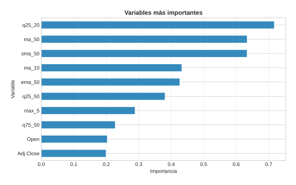
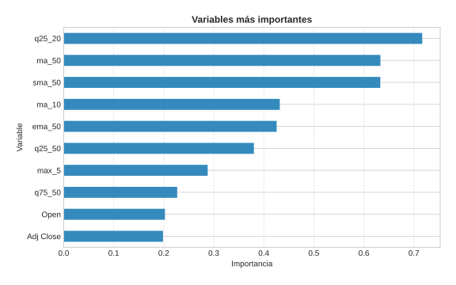
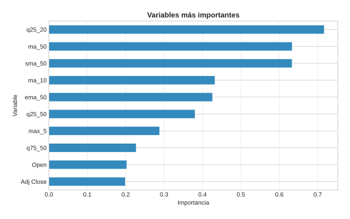

Visualizaciones diarias
Las gráficas mostradas provienen del módulo visualization y se almacenan en results/viz/.
 

Esta página se publica mediante GitHub Pages y se genera de forma automática a partir del contenido del repositorio.
Las gráficas mostradas provienen del módulo visualization y se almacenan en results/viz/.

docs/ en la raíz del proyecto (ya incluida).index.html similar a este con la descripción del proyecto y las imágenes.main y la carpeta /docs como fuente.https://<usuario>.github.io/<repositorio>.